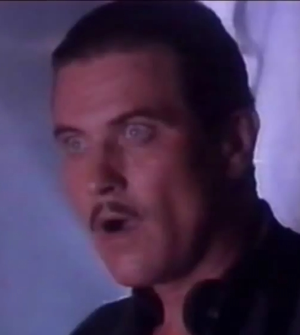

Üdvözöllek a hivatalos oldalamon!
Itt minden lényeges és kevésbé lényeges információt megtalálsz rólam és az eddigi munkáimról.
Rólam röviden: 21 éves vagyok. Egerben születtem 2000.07.14-én. 6 éves voltam, amikor a fővárosba költöztünk. Jelenleg a SZÁMALK-Szalézi Technikumba járok Szoftverfejlesztő- és tesztelő szakra.
A képen nem én vagyok. Nem nagyon szeretek fényképeken szerepelni, ezért inkább azt a profilképemet szúrtam be, amit Steam-en, Discord-on és egyéb platformokon használok. Facebook-on és Instagram-on egébként semmilyen profilképet nem használok.